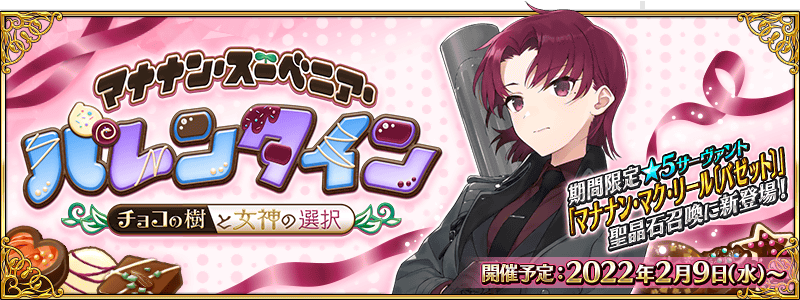
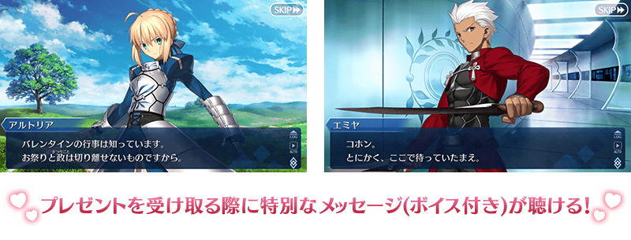
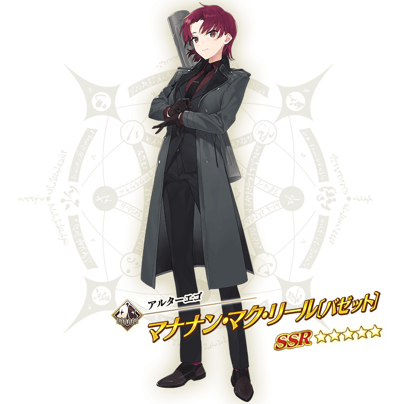

決定舉辦期間限定活動「瑪納諾紀念品情人節 ～巧克力之樹與女神的選擇～」！
將可在活動內入手的巧克力送給從者後，可收到特別的禮物。
另外與去年一樣，包含新登場從者的全從者領取禮物時的會展開附語音的訊息。
詳情敬請期待續報。
※本頁面皆為開發中圖片。會有與實際圖片相異的情況。
◆活動舉辦預定◆
2022年2月9日(三) 17:00～(預定)
◆活動參加條件◆
滿足以下條件的御主才能參加
・通過「特異點F 炎上汙染都市 冬木」

與本活動開始同時，新從者「★5(SSR)瑪納諾・麥克・列〔巴婕特〕」在期間限定的聖晶石召喚登場！
｢★5(SSR)瑪納諾・麥克・列〔巴婕特〕｣在期間限定活動「瑪納諾紀念品情人節 ～巧克力之樹與女神的選擇～」的活動關卡中會得到「自身的攻擊威力提升100%」及在關卡通過時得到的「自身的絆點數獲得量提升50%」的加成！


本活動的期間中，下表的從者在活動關卡中，會得到「自身的攻擊威力提升」與「絆點數獲得量提升」的加成！
強化對象從者，向活動挑戰吧！
※活動加成的效果量因從者而異。

【活動加成的效果量與對象從者】
| 自身的 攻擊威力 |
絆點數 獲得量 |
職階 | 稀有度 | 從者名 |
|---|---|---|---|---|
| ＋100% | 只限自身 ＋50% |
Alterego | ★★★★★ | 瑪納諾・麥克・列〔巴婕特〕 |
| ＋50％ | 只限自身 ＋20% |
Lancer | ★★★★ | 美杜莎 |
| ★★★ | 豹人 | |||
| Ruler | ★★★★★ | 卡蓮・Ｃ・奧爾黛西亞(埃莫〔卡蓮〕) | ||
| ★★★★ | 阿斯特蕾亞 | |||
| ＋30％ | 只限自身 ＋20% |
Saber | ★★★★★ | 尼祿・克勞狄烏斯〔Bride〕 |
| Archer | ★★★★★ | 清少納言 | ||
| Caster | ★★★★★ | 紫式部 | ||
| Assassin | ★★★★★ | 賽米拉米斯 | ||
| Berserker | ★★★★★ | 謎之女主角X〔Alter〕 |
※就算成為對象從者也會有未在本活動的主線劇本登場的情況。 ※埃莫〔卡蓮〕進行靈基再臨的話，卡面名稱會變成卡蓮・C・奧爾黛西亞。 ※自2月2日(三) 17:00，在從者選擇畫面和從者強化畫面等，追加活動加成篩選器。由於是只顯示於活動活躍從者的便利功能，敬請活用。
其他還有，
・「情人節2022」舉辦前夕宣傳活動
・情人節2022舉辦前夕Pick Up召喚
以期間限定舉辦中！
關於詳情，請自下述橫幅確認。
■「情人節2022」舉辦前夕宣傳活動詳細情報

■「情人節2022舉辦前夕Pick Up召喚」詳細情報